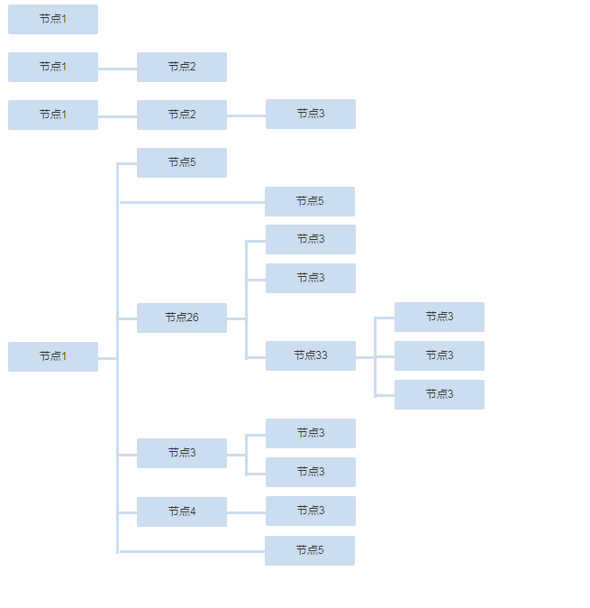
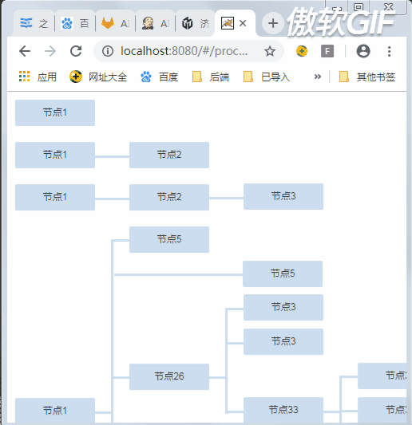
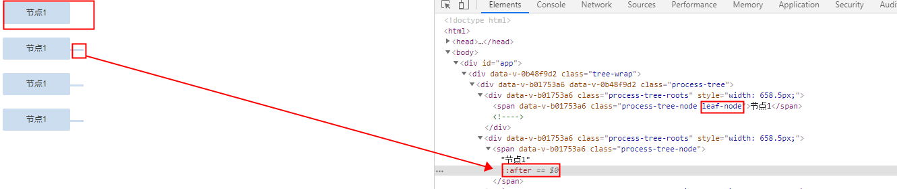
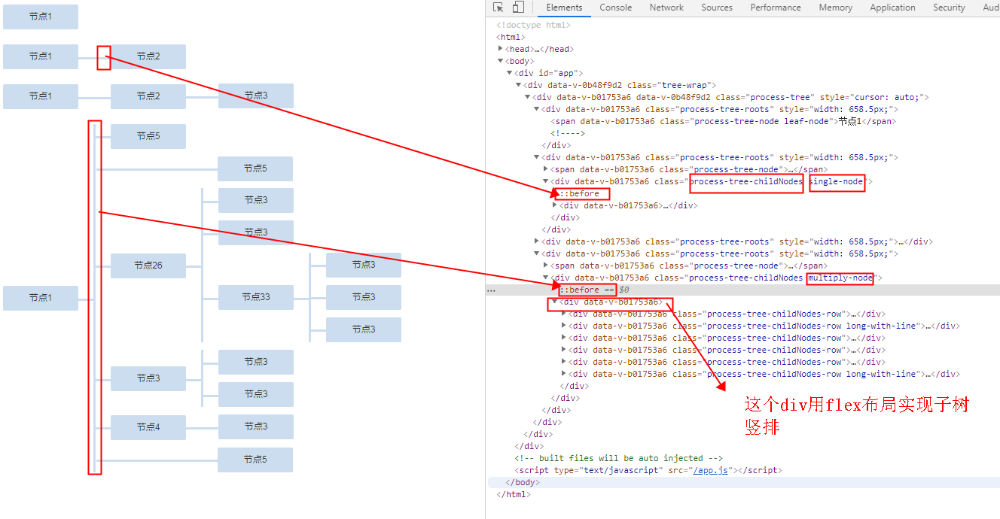
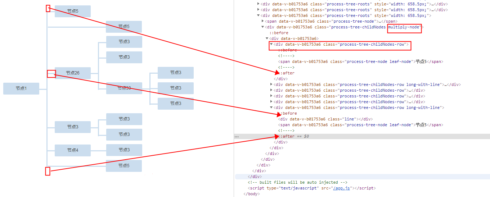
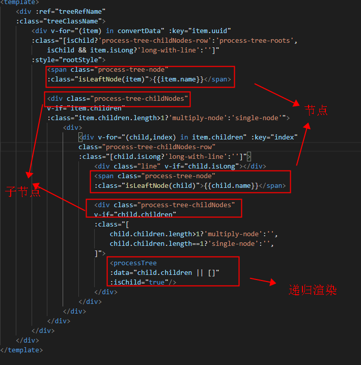
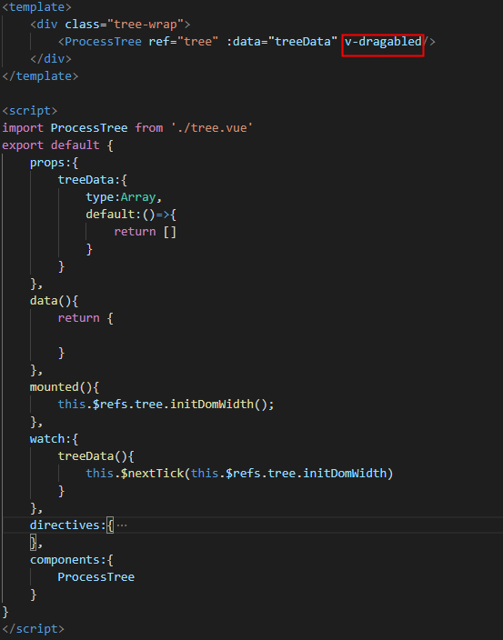
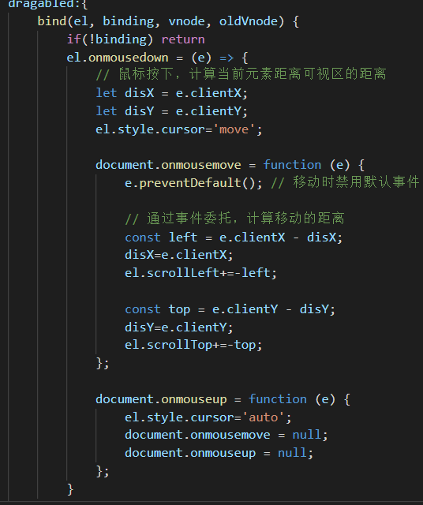
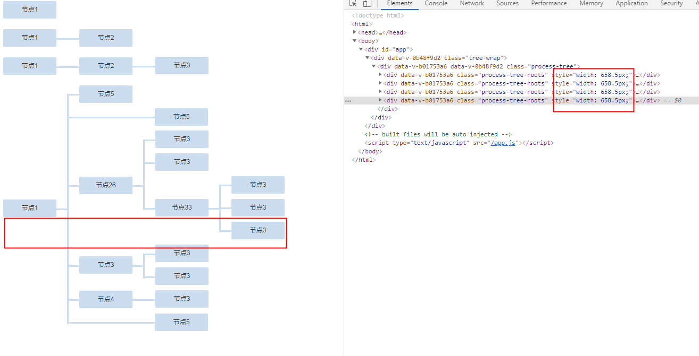

主要用css+flex布局实现样式部分，vue实现组件逻辑。首先看下效果吧：

当空间不够时还可以使用拖拽功能

接下来说明下实现思路
1.首先是实现单个节点样式，这个很简单不谈了，节点后都跟有一小段连接线，只有叶子节点没有连接线。使用伪元素after实现连接线，子节点添加额外样式来取消连接线。

2.然后是父子节点之间的连接线，因为有两种情况（a.只有一个子节点的；b.有多个子节点），所以要分情况实现

2.1子节点公共样式process-tree-childNodes设置为inline-block；vertical-align: middle;以此来实现与父节点的样式对齐； 紧跟的div设置为flex竖排布局
2.2单个子节点添加额外样式single-node，设置他的伪元素before为横向连接线,；多个子节点添加额外样式multiply-node，设置伪元素before为竖向的连接线
2.3多个子节点时的竖向连接线会多出来一部分，通过设置第一个子树节点的after伪元素和最后一个子树节点的after伪元素来遮盖住超出部分，其余的横向连接线都通过设置子树节点的before伪元素实现

好了样式部分的大体思路就是这样了。
然后是vue部分的实现，主要是各种样式的添加，树结构的数据要求组件应该可以递归使用

最后是拖拽功能，通过指令实现
首先在外部包装一层，设置overflow：hidden，内部的流程树组件设置scrolll


initDomwidth方法用来设置树的宽度，通过获取所有叶子节点的距离根节点左边的距离，取最大值做为树的宽度，防止宽度不够导致树变形。为了能够拖拽，在乘以一个系数作为最终的树宽度。

我已经上传了组件到npm，感兴趣的盆友可以试试看，npm install process-tree-vue。
最后，这个只是试验性质的demo，因为流程图多用于做展示，展示要求各种各样，可以在此基础上做调整修改来适应要求。